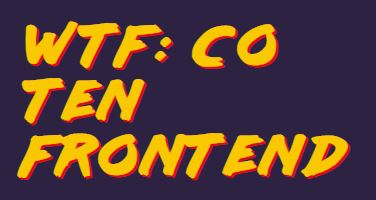
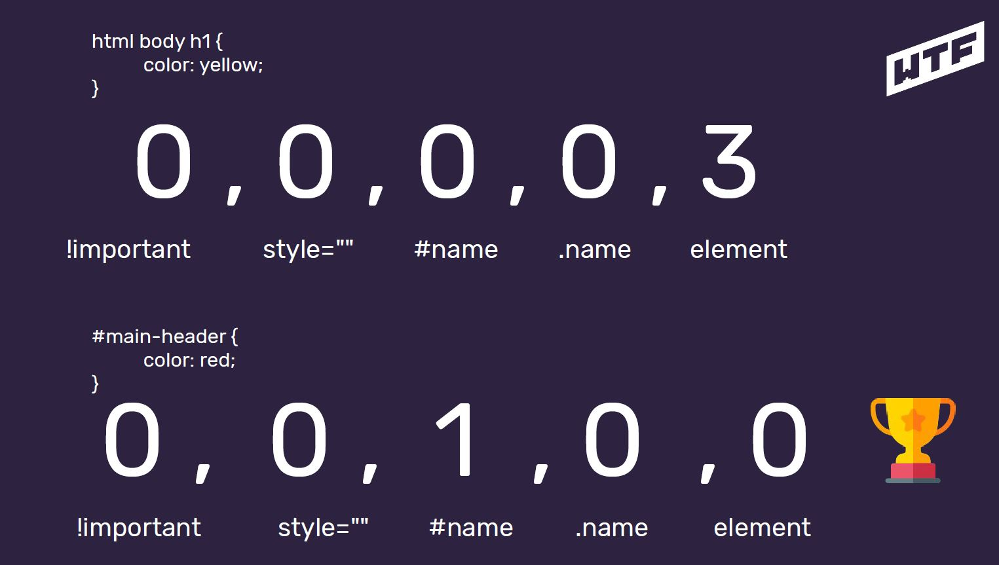

WTF: Co ten frontend

W tej sekcji na bieżąco będę zapisywał notatki ze szkolenia WTF.
Postanowiłem notować jedynie rzeczy dla mnie nowe (albo takie które
znałem, ale dotychczas źle wykorzystywałem), tak żebym w razie
konieczności powtórki, mógł tutaj zajrzeć i szybko odświeżyć swoją
wiedzę.
Tydzień 1
-
Slack – słyszałem o nim wcześniej, ale nigdy na poważnie
nie używałem. Okazuje się, że to całkiem fajne narzędzie do
codziennej pracy.
-
Ścieżka rozwoju – bardzo często o tym myślałem (co jeszcze
powinienem się nauczyć, w którą stronę pójść), a tutaj znalazem do
tego fajną stronę:
ścieżka rozwoju
Tydzień 2
-
Semantyczny HTML – dowiedziałem się, że pisanie HTML nie
jest wcale łatwe, a pisanie dobrego HTML’a to sztuka. Semantyczny
HTML oznacza HTML mający znaczenie. W tym przypadku bardzo ważne
jest wykorzystywanie takich znaczników, które nadają odpowiednie
znaczenie „swojej wewnętrznej treści”.
-
main – główna część dokumentu (pliku HTML)
-
section – sekcja dokumentu (tutaj, np. „Notatki z WTF…”)
-
article – samodzielne treści (tutaj, np. pojedynczy tydzień)
- header – nagłówek - dokumentu / sekcji / artykułu
- footer – stopka - dokumentu / sekcji
-
h1 … h6 – tekstowe nagłówki tytułowe - dokumentu / sekcji
- p – paragraf / akapit
-
Walidator kodu HTML – okazuje się, że poprawność pisanego
HTML można łatwo sprawdzić pod tym adresem:
sprawdź poprawność HTML
-
Dokumentacja HTML’a
Tydzień 3
-
Kanban – metodologia kanban, polega na planowaniu i
organizowaniu wykonywanych czynności, z podziałem na listę zadań
do wykonania, aktualnie wykonywanych i zadań wykonanych. Okazuje
się, ze nieświadomie od dawna wykorzystuje podobne schematy,
których zadanie jest takie samo, czyli usprawnić wykonywanie
różnych czynności, lepiej zorganizować czas w ciągu dnia itp.
-
Trello – wykorzystywałem kiedyś w projekcie na studiach,
jednak wtedy nie zauważyłem potencjału tego prostego narzędzia.
Pozwala tworzyć dowolną liczbę tablic, a w nich różnych kategorii
zadań – narzędzie m.in. metodologii kanban. Obecnie korzystam
„pełną parą” z potencjału tej prostej aplikacji :)
-
Semantyczny HTML cd.
-
br – nowa linia – nie stosujemy do „robienia dużych odstępów”
-
b, i – wyróżnienie (jedynie wizualne) fragmentu z tekstu
otaczającego, bez większego znaczenia semantycznego
-
strong – pogrubienie tekstu, podkreśla wysoką istotność i
poważność frazy w nim zawartej
-
em – kursywa, tekst może mieć inne znaczenie (np. ironia)
-
a href, target – linki zewnętrzne / łącza wewnątrz
dokumentu (kotwice) – „opis „ powinien mieć określone
znaczenie do czego prowadzi „przejdź do notatek” zamiast, np.
„czytaj dalej” itp.
-
img src, alt – zdjęcie, atrybut alt jest ważny nie
tylko w przypadku nie odnalezienia zdjęcia w źródle, ale
również dla czytników ekranowych
- Nazwy plików – kebab-case (małe litery z pauzami)
-
Atrybuty globalne
-
CSS
-
!important – nie powinno się go używać! „Psuje” całą
„hierarchię” stylowania (specyficzność)
-
Style inline – pisane w HTML,
nie powinno się ich używać!
-
Specyficzność – hierarchia stylowania, wygrywają style z
najwyższą specyficznością, tzn. nadpisują pozostałe style. W
przypadku remisu, aplikowane są style „bliżej” elementu
(najpóźniej zdefiniowane)
-
Klasy – zalecane do stylowania, bez zagnieżdżeń, pojedyncze,
dobrze nazwane klasy per element (nie zwiększaj specyficzności
bez potrzeby), klasa nawet do pojedynczego elementu danego
typu

-
Coolors.co – narzędzie do łatwego tworzenia palet kolorów -
stwórz paletę kolorów
-
JavaScript
-
Java != JavaScript
-
EcmaSctipt – specyfikacja, z której czerpie JavaScript, (ES6+)
= EcmaScript 2015+ to obowiązujący standard JS (nowy
JavaScript), stale rozwijany (EcmaScript 2020) itp.
-
Wartości – wartości dla JS, są tym czym liczby dla matematyki
-
Operacje porównywania
-
Literały – łączenie wartości ze zmiennymi w postaci jednego
ciągu znaków
-
Zmienne – zapisujemy jako camelCase
-
Obiekty
-
Funkcje
-
script - znacznik dla kodu JS w HTML, zawsze na samym końcu
(body /body), nie zalecane pisanie kodu JS w HTML’u
-
Backtick / backquote (`) – „kopnięty apostrof” – służy do
tworzenia literałów